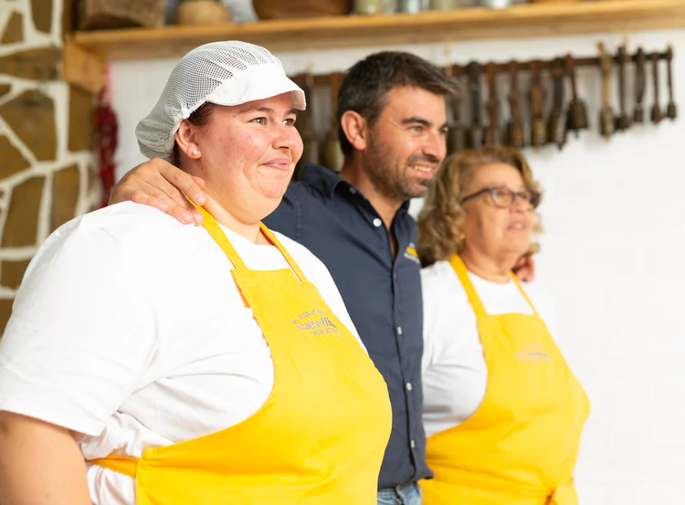
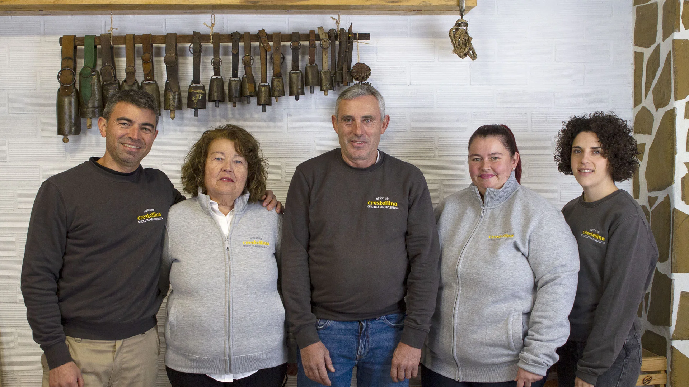

Empresa familiar · Sierra de Casares
Una Tradición que Desafía al Tiempo
Desde que nuestra familia plantó raíces en la Sierra Crestellina en 1930, hemos vivido en perfecta armonía con este entorno privilegiado. Cada queso que elaboramos es un acto de amor a la tierra y un testimonio innegociable de que la excelencia no tiene atajos. Somos ganaderos, queseros y guardianes de una herencia que vale la pena preservar.
Herencia viva
Recetas ancestrales pasadas de mano a mano durante cuatro generaciones, sin atajos ni compromisos.
Cabras payoyas en sierra libre
Nuestras cabras pastan libres en los riscos del Paraje Natural, aportando a la leche el sabor único del monte.
Artesanía pura
Quesos volteados uno a uno, respetando los tiempos naturales de maduración en bodega. Sin prisa, sin química.

Herencia Viva
Nuestra Familia
Un legado que fluye como la leche, de generación en generación, y un equipo que hoy es el latido de Crestellina.

Paraje Natural protegido desde 1989
El Origen del Carácter
Sierra
Crestellina
Nuestra quesería no existiría sin este enclave privilegiado. Situada en Casares, la Sierra Crestellina es un macizo calizo que emerge con verticalidad, un refugio donde el tiempo parece haberse detenido y donde nuestras cabras pastan en total libertad.
Refugio Calizo
Paredes escarpadas de hasta 812m que definen un microclima único.
Buitre Leonado
Resguardo de una de las colonias más importantes de Andalucía.
Manejo de Montes
Red Pasto-Cortafuegos: nuestras cabras protegen la sierra del fuego.
Leche de Pastor
Flora mediterránea (tomillo, romero) que aromatiza cada pieza.
La historia completa
Nuestra Trayectoria
Cuatro generaciones, una sola historia de amor por la sierra y el queso artesanal.
El Origen: La Cosalva
María Bravo Calderón y Juan Ocaña Quirós compran La Cosalva, una finca a las faldas de la Sierra Crestellina. Allí inician un intercambio humilde pero lleno de dignidad: sus quesos artesanales, comercializados mediante trueque. Una semilla que tardaría décadas en florecer por completo.
La Laguna: el hogar definitivo
Nace Juan Ocaña Bravo, que daría continuidad a la actividad quesera. Ese mismo año, la familia se instala en la granja actual —La Laguna— donde hoy siguen elaborando quesos. Una mudanza que marcaría el destino de todo lo que vendría después.
Una sociedad de por vida
Se casan Juan Ocaña Quirós y Ana Mateo Quiñones. Juntos, e impulsados por el empuje familiar, inician su propia explotación caprina. Dos personas, una misma visión: criar las mejores cabras payoyas de Andalucía.
Nace la 4ª generación
En 1982 llega Juan Ocaña Mateo y en 1987, Ana Ocaña Mateo. Dos niños que crecen entre quesos, cabras y sierra, sin saber todavía que algún día llevarían el apellido Crestellina al mundo. El relevo generacional ya estaba en marcha.
Nace la quesería
Por iniciativa de Juan Ocaña padre, se crea formalmente la quesería. Ana Mateo, la maestra quesera, toma las riendas de la elaboración. Sus manos, su olfato y su amor por el proceso harán del queso Crestellina un producto único en toda Andalucía.
El maestro quesero toma el timón
Juan Ocaña Mateo finaliza sus estudios en ganadería caprina y elaboración artesanal de quesos. El conocimiento universitario se suma a la experiencia de tres generaciones. La cuarta generación está lista para asumir el reto de modernizar sin perder la esencia.
El año más duro
La pandemia sacude los cimientos del negocio. Ese mismo año, Juan Ocaña padre fallece en febrero. Un golpe doble que pone a prueba todos los valores que él había sembrado a lo largo de décadas. Pero en los momentos de crisis es donde la familia Ocaña siempre resurge con más fuerza.
Toman la difícil decisión de reducir el rebaño para apostar por la calidad del queso sobre la cantidad de leche. Una decisión valiente que marcaría el rumbo del nuevo Crestellina.
Nace Crestellina tal y como la conoces
Cambian de nombre: de "Quesos Sierra Crestellina" a simplemente Crestellina. Nueva imagen de marca, nuevos quesos con sello ecológico y un propósito claro: llevar a cada mesa un pedazo de la sierra, de la familia y de la historia que empezó en 1930.
Hoy, la historia sigue escribiéndose. →
Nuestro Manifiesto
En Crestellina no vendemos quesos.
Vendemos campo.
Los quesos son nuestra excusa para que reconectes con la naturaleza y seas feliz. Compartimos con pasión y humildad el legado de nuestra familia. Crestellina es un canto a la vida rural, una llamada a parar, ser consciente y vivir con gratitud.
"Sencillos por Naturaleza."
Cabras en pastoreo extensivo · Prevención de incendios · Red Pasto-Cortafuegos de Andalucía
Energía solar propia · Envases reciclables y compostables · Gestión circular de residuos
Talleres educativos para escolares · Programas de inclusión · Apoyo a la economía local
¿Quieres vivir la experiencia?
Visítanos en la sierra. Haz tu propio queso. Lleva a casa algo real.